M2M | Machine to machine | Machine to machine (commonly abbreviated as M2M) refers to direct communication between devices using any communications channel, including wired and wireless. Machine to machine communication can include industrial instrumentation, enabling a sensor or meter to communicate the data it records (such as temperature, inventory level, etc.) to application software that can use it (for example, adjusting an industrial process based on temperature or placing orders to replenish inventory). Such communication was originally accomplished by having a remote network of machines relay information back to a central hub for analysis, which would then be rerouted into a system like a personal computer.
More recent machine to machine communication has changed into a system of networks that transmits data to personal appliances. The expansion of IP networks around the world has made machine to machine communication quicker and easier while using less power. These networks also allow new business opportunities for consumers and suppliers. |
MAC | Media Access Control | In IEEE 802 LAN/MAN standards, the medium access control (MAC) sublayer (also known as the media access control sublayer) and the logical link control (LLC) sublayer together make up the data link layer. Within that data link layer, the LLC provides flow control and multiplexing for the logical link (i.e. EtherType, 802.1Q VLAN tag etc), while the MAC provides flow control and multiplexing for the transmission medium.
These two sublayers together correspond to layer 2 of the OSI model. For compatibility reasons, LLC is optional for implementations of IEEE 802.3 (the frames are then "raw"), but compulsory for implementations of all other IEEE 802 standards. Within the hierarchy of the OSI model and IEEE 802 standards, the MAC block provides a control abstraction of the physical layer such that the complexities of physical link control are invisible to the LLC and upper layers of the network stack. Thus any LLC block (and higher layers) may be used with any MAC. In turn, the medium access control block is formally connected to the PHY via a media-independent interface. Although the MAC block is today typically integrated with the PHY within the same device package, historically any MAC could be used with any PHY, independent of the transmission medium.
When sending data to another device on the network, the MAC block encapsulates higher-level frames into frames appropriate for the transmission medium (i.e. the MAC adds a syncword preamble and also padding if necessary), adds a frame check sequence to identify transmission errors, and then forwards the data to the physical layer as soon as the appropriate channel access method permits it. Controlling when data is sent and when to wait is necessary to avoid congestion and collisions, especially for topologies with a collision domain (bus, ring, mesh, point-to-multipoint topologies). Additionally, the MAC is also responsible for compensating for congestion and collisions by initiating retransmission if a jam signal is detected, and/or negotiating a slower transmission rate if necessary. When receiving data from the physical layer, the MAC block ensures data integrity by verifying the sender's frame check sequences, and strips off the sender's preamble and padding before passing the data up to the higher layers. |
MAC Address | Media Access Control Address | A media access control address (MAC address) of a device is a unique identifier assigned to a network interface controller (NIC) for communications at the data link layer of a network segment. MAC addresses are used as a network address for most IEEE 802 network technologies, including Ethernet and Wi-Fi. In this context, MAC addresses are used in the medium access control protocol sublayer.
A MAC may be referred to as the burned-in address (BIA). It may also be known as an Ethernet hardware address (EHA), hardware address or physical address (not to be confused with a memory physical address).
A network node may have multiple NICs and each NIC must have a unique MAC address. Sophisticated network equipment such as a multilayer switch or router may require one or more permanently assigned MAC addresses.
MAC addresses are most often assigned by the manufacturer of a NIC and are stored in its hardware, such as the card's read-only memory or some other firmware mechanism. A MAC address may include the manufacturer's organizationally unique identifier (OUI). MAC addresses are formed according to the rules of one of three numbering name spaces managed by the Institute of Electrical and Electronics Engineers (IEEE): MAC-48, EUI-48, and EUI-64.[1][2] EUI is an abbreviation for Extended Unique Identifier.
|
MAC Flooding |
| In computer networking, a media access control attack or MAC flooding is a technique employed to compromise the security of network switches. The attack works by forcing legitimate MAC table contents out of the switch and forcing a unicast flooding behavior potentially sending sensitive information to portions of the network where it is not normally intended to go. |
MAC Spoofing |
| MAC spoofing is a technique for changing a factory-assigned Media Access Control (MAC) address of a network interface on a networked device. The MAC address that is hard-coded on a network interface controller (NIC) cannot be changed. However, many drivers allow the MAC address to be changed. Additionally, there are tools which can make an operating system believe that the NIC has the MAC address of a user's choosing. The process of masking a MAC address is known as MAC spoofing. Essentially, MAC spoofing entails changing a computer's identity, for any reason, and it is relatively easy. |
Machine code |
| Machine code is a computer program written in machine language instructions that can be executed directly by a computer's central processing unit (CPU). Each instruction causes the CPU to perform a very specific task, such as a load, a jump, or an ALU operation on a unit of data in a CPU register or memory.
Machine code is a strictly numerical language which is intended to run as fast as possible, and may be regarded as the lowest-level representation of a compiled or assembled computer program or as a primitive and hardware-dependent programming language. While it is possible to write programs directly in machine code, it is tedious and error prone to manage individual bits and calculate numerical addresses and constants manually. For this reason, programs are very rarely written directly in machine code in modern contexts, but may be done for low level debugging, program patching, and assembly language disassembly.
The overwhelming majority of practical programs today are written in higher-level languages or assembly language. The source code is then translated to executable machine code by utilities such as compilers, assemblers, and linkers, with the important exception of interpreted programs, which are not translated into machine code. However, the interpreter itself, which may be seen as an executor or processor, performing the instructions of the source code, typically consists of directly executable machine code (generated from assembly or high-level language source code).
Machine code is by definition the lowest level of programming detail visible to the programmer, but internally many processors use microcode or optimise and transform machine code instructions into sequences of micro-ops, this is not generally considered to be a machine code per se |
Macro Estimation |
| Refers to estimating the whole of something. See top-down estimation. Also a synonym for project estimate. |
MAG | L2/B2B Aggregation Metro (All Legacy L2 Devices for B2B) | L2/B2B Aggregation Metro (All Legacy L2 Devices for B2B) - Location: Metro |
Maintenance |
| Software maintenance. Deploying, updating, correcting, evolving, and operating software systems. Also denotes the maintenance CKA. See CxStand_Maintenance for more information. |
Maintenance Plan |
| A plan specifying the method for maintaining the system after its initial release. |
MAN | Metropolitan Area Network | A metropolitan area network (MAN) is a [computer network] that interconnects users with computer resources in a geographic area or region larger than that covered by even a large local area network (LAN) but smaller than the area covered by a wide area network (WAN). The term MAN is applied to the interconnection of networks in a city into a single larger network which may then also offer efficient connection to a wide area network.It is also used to mean the interconnection of several local area networks in a metropolitan area through the use of point-to-point connections between them. The latter usage is also sometimes referred to as a campus network.
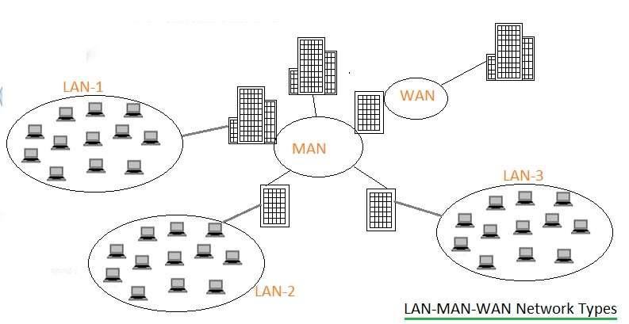
|
Management by Walking Around | MBWA | Term used to describe set of management techniques focused on frequent, informal communication with team members. MBWA can be used is conjunction with more formal techniques to help manage project risks, track actual progress to plan, and facilitate quick issue resolution.
CxOne encourages MBWA by all project leads and others with project responsibilities. |
Management Plane |
| In computer networking, the management plane of a networking device is the element of a system that configures, monitors, and provides management, monitoring and configuration services to, all layers of the network stack and other parts of the system. It should be distinguished from the control plane, which is primarily concerned with routing table and forwarding information base computation.
In system diagrams, the management plane is typically shown in three dimensions as overlapping the network stack, separated by a dimension that delineates the power plane, data plane, control plane and management plane.
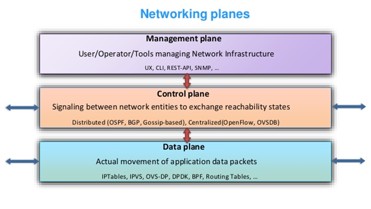
|
MANET | Mobile Adhoc NETwork | A mobile ad hoc network (MANET), also known as wireless ad hoc network or ad hoc wireless network, is a continuously self-configuring, infrastructure-less network of mobile devices connected wirelessly.
Each device in a MANET is free to move independently in any direction, and will therefore change its links to other devices frequently. Each must forward traffic unrelated to its own use, and therefore be a router. The primary challenge in building a MANET is equipping each device to continuously maintain the information required to properly route traffic.[4] Such networks may operate by themselves or may be connected to the larger Internet. They may contain one or multiple and different transceivers between nodes. This results in a highly dynamic, autonomous topology.
MANETs are a kind of wireless ad hoc network (WANET) that usually has a routable networking environment on top of a Link Layer ad hoc network. MANETs consist of a peer-to-peer, self-forming, self-healing network. MANETs circa 2000–2015 typically communicate at radio frequencies (30 MHz – 5 GHz).
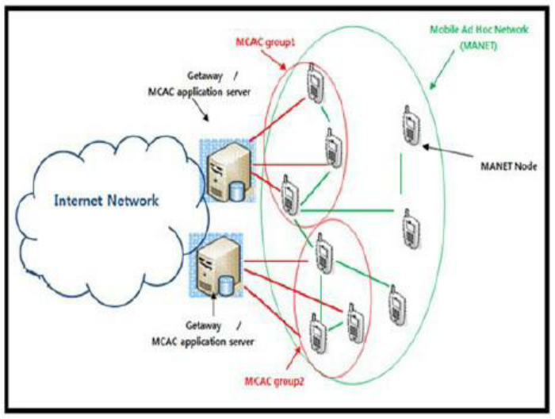
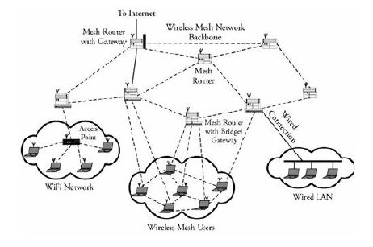
|
Manual Testing |
| Executing of test cases by a human operator exercising a system and noting results. |
MAP | Mobile Application Part | The Mobile Application Part (MAP) is an SS7 protocol that provides an application layer for the various nodes in GSM and UMTS mobile core networks and GPRS core networks to communicate with each other in order to provide services to users. The Mobile Application Part is the application-layer protocol used to access the Home Location Register, Visitor Location Register, Mobile Switching Center, Equipment Identity Register, Authentication Centre, Short message service center and Serving GPRS Support Node (SGSN). |
MAS | MPLS L2/B2B Aggregation Metro (M2F) | MPLS L2/B2B Aggregation Metro (M2F) - Location: Metro |
Material |
| Materials support the creation, review, and maintenance of different types of artifacts. See CxOneOverview for additional information. |
MBMS | Multimedia Broadcast Multicast Services | Multimedia Broadcast Multicast Services (MBMS) is a point-to-multipoint interface specification for existing and upcoming 3GPP cellular networks, which is designed to provide efficient delivery of broadcast and multicast services, both within a cell as well as within the core network. For broadcast transmission across multiple cells, it defines transmission via single-frequency network configurations. The specification is referred to as Evolved Multimedia Broadcast Multicast Services (eMBMS) when transmissions are delivered through an LTE (Long Term Evolution) network. eMBMS is also known as LTE Broadcast.
Target applications include mobile TV and radio broadcasting, live streaming video services, as well as file delivery and emergency alerts. |
MBORC | Matter Beyond Our Reasonable Control | MBORC is a contractual provision contained in all Openreach contracts which releases Openreach from liability under the relevant product terms and conditions in circumstances where the following criteria apply to our failure to perform the contract: The cause of the incident is beyond our reasonable control and The fix to remedy within contractual timescales is also beyond our reasonable control.
Examples of MBORC situations are: Network attacks, i.e. criminal damage to network apparatus BT plant damaged by non-BT contractors a PCP or pole being knocked over or damaged in a traffic accident damage caused by exceptionally severe weather, eg floods or storm damage
a gas leak preventing access to underground cables/joints
|
MD5 | Message Digest 5 | The MD5 algorithm is a widely used hash function producing a 128-bit hash value. Although MD5 was initially designed to be used as a cryptographic hash function, it has been found to suffer from extensive vulnerabilities. It can still be used as a checksum to verify data integrity, but only against unintentional corruption.
Like most hash functions, MD5 is neither encryption nor encoding. It can be cracked by brute-force attack and suffers from extensive vulnerabilities as detailed in the security section below.
MD5 was designed by Ronald Rivest in 1991 to replace an earlier hash function MD4.[3] The source code in RFC 1321 contains a "by attribution" RSA license. The abbreviation "MD" stands for "Message Digest."
The security of MD5 has been severely compromised, with its weaknesses having been exploited in the field, most infamously by the Flame malware in 2012. The CMU Software Engineering Institute considers MD5 essentially "cryptographically broken and unsuitable for further use" |
MDF | Main Distribution Frame | A point in a telephone exchange where cables from outside can be connected to the exchange equipment.
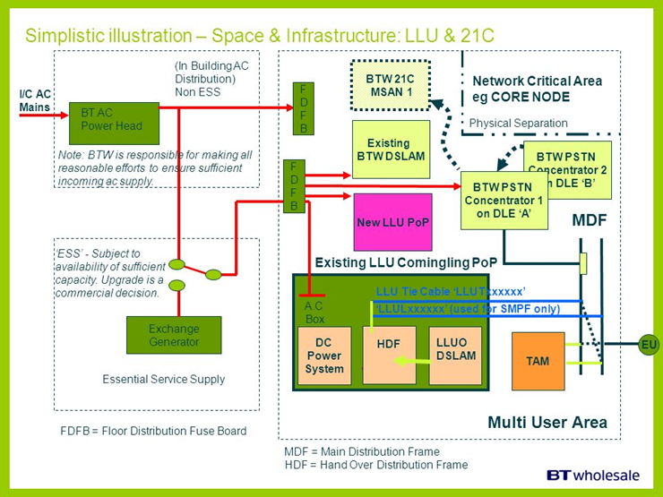
|
|
| Telecommunications mediation is a process that converts call data to pre-defined layouts that can be imported by a specific billing system or other OSS applications
A billing mediation platform is a system used to convert data of certain datatypes to other datatypes, usually for billing purposes. Billing Mediation Platforms are used mostly by telephone companies, who typically need to process UDRs (Usage Detail Records). In call scenarios UDRs are most often known as CDRs (Call Detail Records), and among broadband carriers they are often referred to as IPDR
Billing mediation platforms get their name from their behavior: they "mediate" data between systems. In a typical telephone company scenario, the systems providing data to the mediation platform are network elements, such as telephone switches, and the systems receiving data from the mediation platform perform accounting, auditing, archiving, or bill-generation functions. The mediation system collects, collates and prepares data for consumption by the downstream systems, which often accept data only in a limited set of formats.
Functionality
Typically a mediation platform is used for the following tasks:
Collection and validation of CDRs Filtering out of non billing-relevant CDRs Collating Correlation of different input sources CDRs Aggregation of partial CDRs related to the same call Format change and CDRs normalization Business transformation of data
In a telecom billing scenario, mediation is the first step after receiving a CDR. The mediated CDR is forwarded to a rating engine, which calculates the charge associated with the CDRs. In today's world Rating Engines are more becoming necessary for the telecom billing system to meet the growing variant customer needs for different services.[citation needed]
Despite the name, not all of the data transferred via billing mediation platforms is actually used for billing purposes. For instance, the mediation software might generate traffic volume statistics based on the number and origin of the records passing through it. Those statistics could then be used for capacity planning, as part of a network monitoring procedure, or for any other business intelligence applications.
At core Mediation involves data transfer between various systems with or without modification of data starting from Network elements to OSS/BSS systems.
Sophisticated Billing Mediation software serves end to end functionality for telecom operators. Mediation software performs various operation from data collection to downstream distribution to modules like retail billing, interconnect settlement, business intelligence, fraud detection and revenue assurance.
Following list provides insight on mediation software activities
Collection and Archive Decoding/Encoding Normalization (Common Format) Filtering Conversion Validation Record Enrichment (Using Complex Reference Data) Duplicate Record Detection Aggregation or Correlation Buffering Cloning Sorting Downstream Format Mapping Header and Trailer generation Downstream Distribution Error Messaging and Alarms Auditing and Reports Reconciliation Reference Data Configuration Provisioning services for the subscription.
Complementary to Billing Mediation functions, comprehensive mediation platforms also provide functionality dedicated to Service Provisioning (the two areas frequently intermix as services configured and used by the end customer result in usage data records generation in the network).
Mediating between the systems is not the only job that Mediation Platform can do. Actually this can be used as a provisioning agent. The basic provisioning commands can be configured within the mediation system and whenever we get a request for the system which does the provisioning, the request can be converted into a file, in which mediation can append the service provisioning commands and send it to HLR for activating any request. This of course, load dependent but can come very handy when there is a crisis in the other system.
 
|
MELP | Mixed-excitation linear prediction | Mixed-excitation linear prediction (MELP) is a United States Department of Defense speech coding standard used mainly in military applications and satellite communications, secure voice, and secure radio devices. Its standardization and later development was led and supported by NSA, and NATO.
Compression level
MELPe is intended for the compression of speech. Given an audio input sampled at 8 kHz, the MELPe codec yields the following compression ratios over a 64 kbit/s μ-Law G.711 datastream, discounting the effects of protocol overhead: 
Generally, speech coding involves a trade-off of different aspects including bit-rate, speech quality, delay (frame size and lookahead), computational complexity, robustness to different speakers and languages, robustness to different background noises, channel error robustness, and also codec state recovery in the face of packet loss. Since the MELPe's lower rates (600 and 1200 bit/s) are supersets of the 2400 bit/s rate, the algorithm complexity (e.g. in MIPS) is about the same for all rates. The lower rates use increased frames and lookahead, as well as codebook size, therefore they require more memory.
|
Metric |
| Data collected or derived from a project or organization to determine if it posses the desired attributes. |
MGCF | media gateway controller function | A media gateway controller function (MGCF) is a SIP endpoint that does call control protocol conversion between SIP and ISUP/BICC and interfaces with the SGW over SCTP. It also controls the resources in a Media Gateway (MGW) across an H.248 interface.
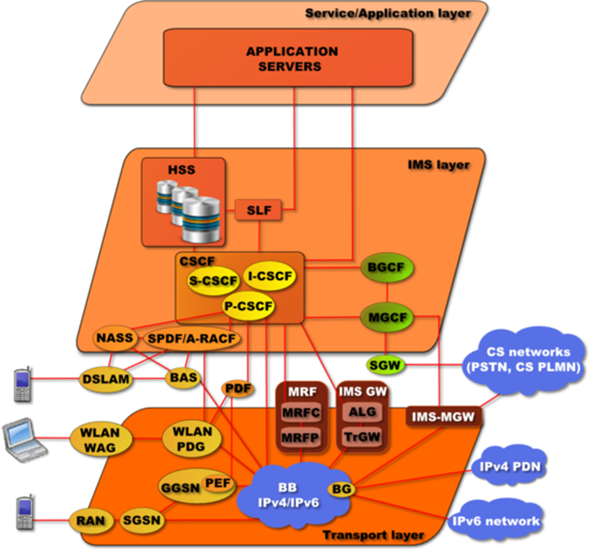
|
MGCP | Media Gateway Control Protocol | The Media Gateway Control Protocol (MGCP) is a signaling and call control communications protocol used in voice over IP (VoIP) telecommunication systems. It implements the media gateway control protocol architecture for controlling media gateways on Internet Protocol (IP) networks connected to the public switched telephone network (PSTN). The protocol is a successor to the Simple Gateway Control Protocol (SGCP), which was developed by Bellcore and Cisco, and the Internet Protocol Device Control (IPDC).
The methodology of MGCP reflects the structure of the PSTN with the power of the network residing in a call control center softswitch which is analogous to the central office in the telephone network. The endpoints are low-intelligence devices, mostly executing control commands and providing result indications in response. The protocol represents a decomposition of other VoIP models, such as H.323, in which the H.323 Gatekeeper, have higher levels of signaling intelligence.
MGCP is a text-based protocol consisting of commands and responses. It uses the Session Description Protocol (SDP) for specifying and negotiating the media streams to be transmitted in a call session and the Real-time Transport Protocol (RTP) for framing the media streams.
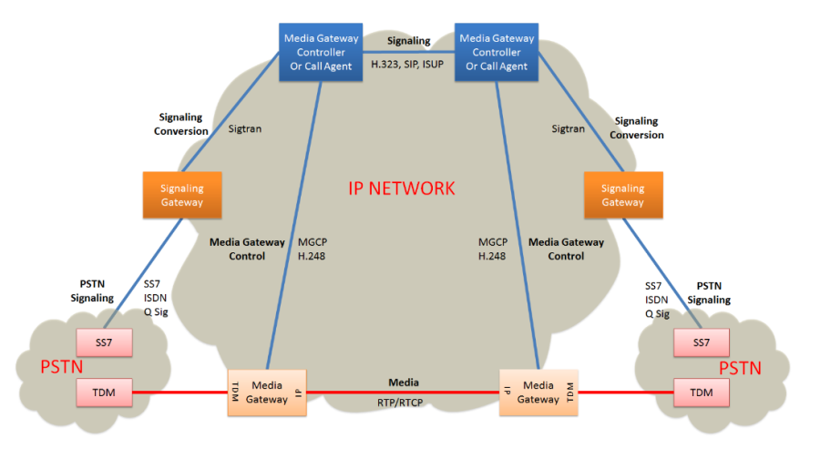
|
MGW | Media Gateway | A media gateway (MGW) interfaces with the media plane of the CS network, by converting between RTP and PCM. It can also transcode when the codecs don't match (e.g., IMS might use AMR, PSTN might use G.711).

|
MIB | management information base | A management information base (MIB) is a database used for managing the entities in a communication network. Most often associated with the Simple Network Management Protocol (SNMP), the term is also used more generically in contexts such as in OSI/ISO Network management model. While intended to refer to the complete collection of management information available on an entity, it is often used to refer to a particular subset, more correctly referred to as MIB-module.
Objects in the MIB are defined using a subset of Abstract Syntax Notation One (ASN.1) called "Structure of Management Information Version 2 (SMIv2)" RFC 2578. The software that performs the parsing is a MIB compiler.
The database is hierarchical (tree-structured) and each entry is addressed through an object identifier (OID). Internet documentation RFCs discuss MIBs, notably RFC 1155, "Structure and Identification of Management Information for TCP/IP based internets", and its two companions, RFC 1213, "Management Information Base for Network Management of TCP/IP-based internets", and RFC 1157, "A Simple Network Management Protocol".
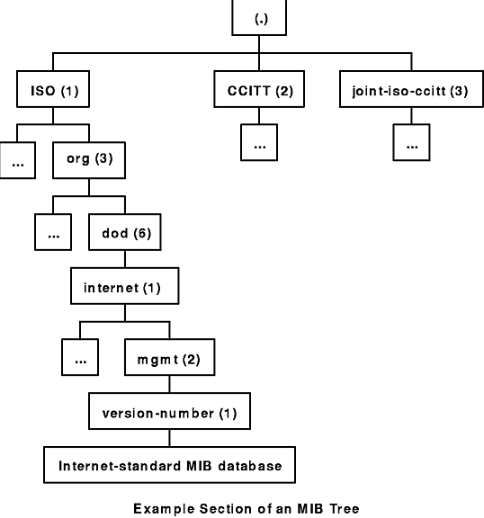
|
Micro Estimation |
| Refers to estimating the details of something. See bottom-up estimation. Also a synonym for task estimate. |
Microservice |
| Microservices - also known as the microservice architecture - is an architectural style that structures an application as a collection of services that are Highly maintainable and testable Loosely coupled Independently deployable Organized around business capabilities. The microservice architecture enables the continuous delivery/deployment of large, complex applications. It also enables an organization to evolve its technology stack.


|
Microstone |
| Synonym for miniature milestone. |
Mil-COTS |
| See COTS |
Milestone |
| A waypoint in a schedule. Often represents a notable accomplishment or date. |
Milestone Release |
| A release that is produced for a milestone in a project plan. |
Milestone Retrospective |
| A Milestone Retrospective is a team's detailed analysis of the project's significant events after a set period of time or at the project's end. |
Milestone Schedule |
| A synonym for a business schedule focused on defining formally project milestones. |
MIMO | multiple-input and multiple-output | In radio, , or MIMO, is a method for multiplying the capacity of a radio link using multiple transmit and receive antennas to exploit multipath propagation. MIMO has become an essential element of wireless communication standards including IEEE 802.11n (Wi-Fi), IEEE 802.11ac (Wi-Fi), HSPA+ (3G), WiMAX (4G), and Long Term Evolution (LTE 4G). More recently, MIMO has been applied to power-line communication for 3-wire installations as part of ITU G.hn standard and HomePlug AV2 specification.
At one time, in wireless the term "MIMO" referred to the use of multiple antennas at the transmitter and the receiver. In modern usage, "MIMO" specifically refers to a practical technique for sending and receiving more than one data signal simultaneously over the same radio channel by exploiting multipath propagation. MIMO is fundamentally different from smart antenna techniques developed to enhance the performance of a single data signal, such as beamforming and diversity.
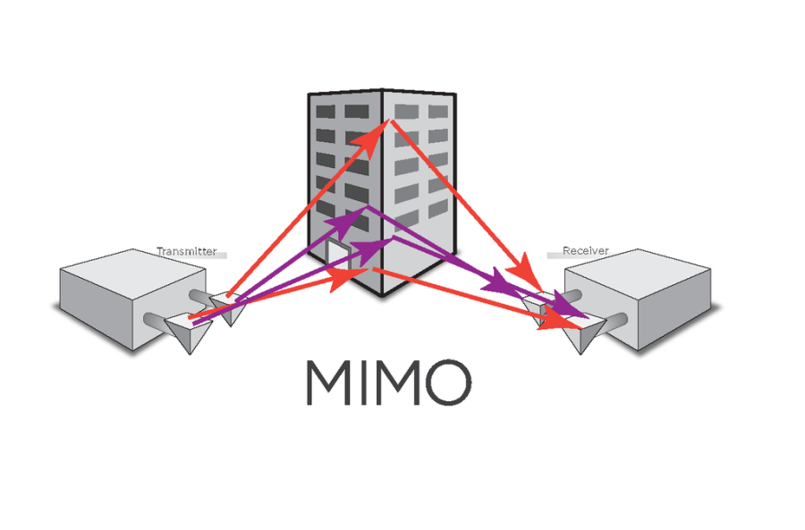
|
Miniature Milestone |
| A milestone capturing a collection of short, coherent tasks that requires a couple of days or less to complete. For project tracking purposes completion is binary; a miniature milestone is considered to be either done or not done, but never partially done. |
MME | Mobility Management Entity | The MME is the key control-node for the LTE access-network. It is responsible for idle mode UE (User Equipment) paging and tagging procedure including retransmissions. It is involved in the bearer activation/deactivation process and is also responsible for choosing the SGW for a UE at the initial attach and at time of intra-LTE handover involving Core Network (CN) node relocation. It is responsible for authenticating the user (by interacting with the HSS). The Non Access Stratum (NAS) signaling terminates at the MME and it is also responsible for generation and allocation of temporary identities to UEs. It checks the authorization of the UE to camp on the service provider's Public Land Mobile Network (PLMN) and enforces UE roaming restrictions. The MME is the termination point in the network for ciphering/integrity protection for NAS signaling and handles the security key management. Lawful interception of signaling is also supported by the MME. The MME also provides the control plane function for mobility between LTE and 2G/3G access networks with the S3 interface terminating at the MME from the SGSN. The MME also terminates the S6a interface towards the home HSS for roaming UEs. |
MMF | Minimum Marketable Feature | A Minimum Marketable Feature is a small, self-contained feature that can be developed quickly and that delivers significant value to the user. |
MNC | Bayonet Neill–Concelman | The BNC (Bayonet Neill–Concelman) connector is a miniature quick connect/disconnect radio frequency connector used for coaxial cable. It features two bayonet lugs on the female connector; mating is fully achieved with a quarter turn of the coupling nut. BNC connectors are used with miniature-to-subminiature coaxial cable in radio, television, and other radio-frequency electronic equipment, test instruments, and video signals. The BNC was commonly used for early computer networks, including ARCnet, the IBM PC Network, and the 10BASE2 variant of Ethernet. BNC connectors are made to match the characteristic impedance of cable at either 50 ohms or 75 ohms. They are usually applied for frequencies below 4 GHz[ and voltages below 500 volts. |
Mob Programming |
| Mob Programming is a software development approach where the whole team works on the same thing, at the same time, in the same space, and at the same computer. |
Mobile Cell |
| Modern mobile phone networks use cells because radio frequencies are a limited, shared resource. Cell-sites and handsets change frequency under computer control and use low power transmitters so that the usually limited number of radio frequencies can be simultaneously used by many callers with less interference.
A cellular network is used by the mobile phone operator to achieve both coverage and capacity for their subscribers. Large geographic areas are split into smaller cells to avoid line-of-sight signal loss and to support a large number of active phones in that area. All of the cell sites are connected to telephone exchanges (or switches), which in turn connect to the public telephone network.
In cities, each cell site may have a range of up to approximately 1⁄2 mile (0.80 km), while in rural areas, the range could be as much as 5 miles (8.0 km). It is possible that in clear open areas, a user may receive signals from a cell site 25 miles (40 km) away.
Since almost all mobile phones use cellular technology, including GSM, CDMA, and AMPS (analog), the term "cell phone" is in some regions, notably the US, used interchangeably with "mobile phone". However, satellite phones are mobile phones that do not communicate directly with a ground-based cellular tower, but may do so indirectly by way of a satellite.
There are a number of different digital cellular technologies, including: Global System for Mobile Communications (GSM), General Packet Radio Service (GPRS), cdmaOne, CDMA2000, Evolution-Data Optimized (EV-DO), Enhanced Data Rates for GSM Evolution (EDGE), Universal Mobile Telecommunications System (UMTS), Digital Enhanced Cordless Telecommunications (DECT), Digital AMPS (IS-136/TDMA), and Integrated Digital Enhanced Network (iDEN). The transition from existing analog to the digital standard followed a very different path in Europe and the US.[11] As a consequence, multiple digital standards surfaced in the US, while Europe and many countries converged towards the GSM standard.
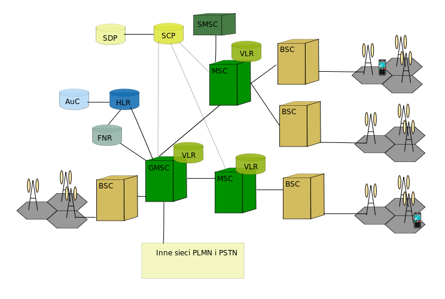
|
Mobile Networks 2G/3G |
|  |
Mock Objects |
| Mock Objects (commonly used in the context of crafting automated unit tests) consist of instantiating a test-specific version of a software component. |
Model |
| A representation of a system or process that uses diagrams and abstraction to describe characteristics of the systems. |
Modeling |
| The practice of using models in requirements and design activities. |
Moderator |
| Leads an inspection meeting. |
MOS | Mean Opinion Score | Mean opinion score (MOS) is a measure used in the domain of Quality of Experience and telecommunications engineering, representing overall quality of a stimulus or system. It is the arithmetic mean over all individual "values on a predefined scale that a subject assigns to his opinion of the performance of a system quality". Such ratings are usually gathered in a subjective quality evaluation test, but they can also be algorithmically estimated.
MOS is a commonly used measure for video, audio, and audiovisual quality evaluation, but not restricted to those modalities. ITU-T has defined several ways of referring to a MOS in Recommendation P.800.1, depending on whether the score was obtained from audiovisual, conversational, listening, talking, or video quality tests.
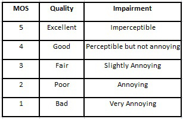
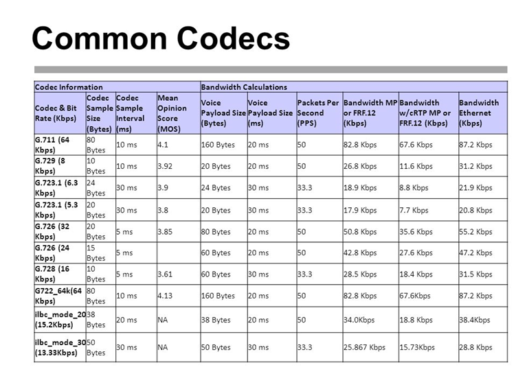
|
MP3 |
| MP3 (formally MPEG-1 Audio Layer III or MPEG-2 Audio Layer III) is an audio coding format for digital audio. Originally defined as the third audio format of the MPEG-1 standard, it was retained and further extended—defining additional bit rates and support for more audio channels—as the third audio format of the subsequent MPEG-2 standard. A third version, known as MPEG 2.5—extended to better support lower bit rates—is commonly implemented, but is not a recognized standard.
MP3 (or mp3) as a file format commonly designates files containing an elementary stream of MPEG-1 audio and video encoded data, without other complexities of the MP3 standard.
In the aspects of MP3 pertaining to audio compression—the aspect of the standard most apparent to end users (and for which is it best known)—MP3 uses lossy data compression to encode data using inexact approximations and the partial discarding of data. This allows a large reduction in file size when compared to uncompressed audio. The combination of small size and acceptable fidelity led to a boom in the distribution of music over the Internet in the mid to late 1990s, as an enabling technology when bandwidth and storage were still at a premium. The MP3 format soon became associated with controversies surrounding copyright infringement, music piracy, the file ripping/sharing services MP3.com and Napster, among others. With the advent of portable media players, a product category also including smartphones, MP3 support remains near-universal.
MP3 compression works by reducing (or approximating) the accuracy of certain components of sound that are considered to be beyond the hearing capabilities of most humans. This method is commonly referred to as perceptual coding, or psychoacoustic modeling. The remaining audio information is then recorded in a space-efficient manner. Compared to CD-quality digital audio, MP3 compression can commonly achieve a 75 to 95% reduction in size. For example, an MP3 encoded at a constant bitrate of 128 kbit/s would result in a file approximately 9% the size of the original CD audio.
Also designed as a streamable format, segments of a transmission can be lost without affecting the ability to decode later segments. |
MPEG | Moving Picture Experts Group | The Moving Picture Experts Group (MPEG) is a working group of authorities that was formed by ISO and IEC to set standards for audio and video compression and transmission. s |
MPEG4 |
| MPEG-4 is a method of defining compression of audio and visual (AV) digital data. It was introduced in late 1998 and designated a standard for a group of audio and video coding formats and related technology agreed upon by the ISO/IEC Moving Picture Experts Group (MPEG) (ISO/IEC JTC1/SC29/WG11) under the formal standard ISO/IEC 14496 – Coding of audio-visual objects. Uses of MPEG-4 include compression of AV data for web (streaming media) and CD distribution, voice (telephone, videophone) and broadcast television applications. |
MPF | Metallic Path Facility | Pair of copper wires (unshielded twisted pair) that run from a Main Distribution Frame (MDF) at a exchange to the end user.
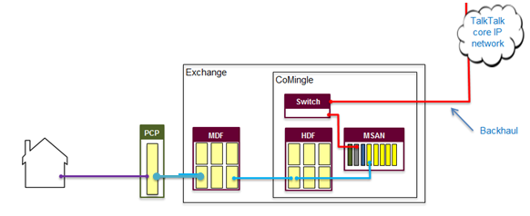
|
MPS | Metro Primary Switch | Metro Primary Switch (M2F) - Location: Metro
Formally known as NGM
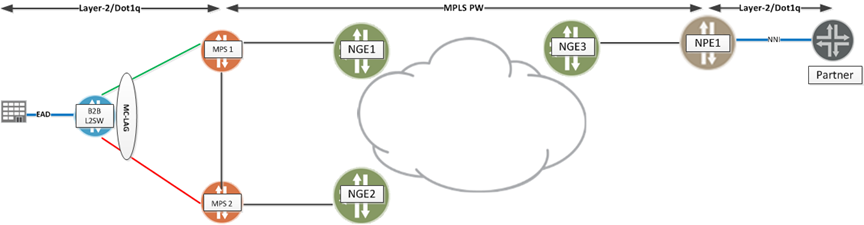
|
MQTT | Message Queuing Telemetry Transport | MQTT (Message Queuing Telemetry Transport) is an ISO standard (ISO/IEC PRF 20922) publish-subscribe-based messaging protocol. It works on top of the TCP/IP protocol. It is designed for connections with remote locations where a "small code footprint" is required or the network bandwidth is limited. The publish-subscribe messaging pattern requires a message broker.
Andy Stanford-Clark of IBM and Arlen Nipper of Cirrus Link authored the first version of the protocol in 1999.
The specification does not specify the meaning of "small code footprint" or the meaning of "limited network bandwidth". Thus, the protocol's availability for use depends on the context. In 2013, IBM submitted MQTT v3.1 to the OASIS specification body with a charter that ensured only minor changes to the specification could be accepted. MQTT-SN is a variation of the main protocol aimed at embedded devices on non-TCP/IP networks, such as ZigBee.
Historically, the "MQ" in "MQTT" came from IBM's MQ Series message queuing product line.[6] However, queuing itself is not required to be supported as a standard feature in all situations. |
MRF | Media Resource Function | The Media Resource Function (MRF) provides media related functions such as media manipulation (e.g. voice stream mixing) and playing of tones and announcements.

|
MRS | Multi-Residence data | Royal Mail Multi-Residence data |
MRTIE | Maximum Relative Time Interval Error |
|
MSAN | Multi-Service Access Node | A multi-service access node (MSAN), also known as a multi-service access gateway (MSAG), is a device typically installed in a telephone exchange (although sometimes in a roadside serving area interface cabinet) which connects customers' telephone lines to the core network, to provide telephone, ISDN, and broadband such as DSL all from a single platform.
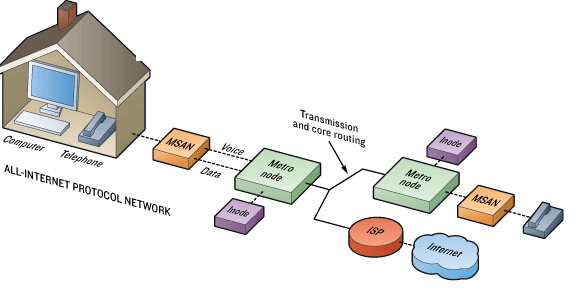
|
MSC | Mobile switching center | The mobile switching center (MSC) is the primary service delivery node for GSM/CDMA, responsible for routing voice calls and SMS as well as other services (such as conference calls, FAX and circuit switched data).
The MSC sets up and releases the end-to-end connection, handles mobility and hand-over requirements during the call and takes care of charging and real time prepaid account monitoring.
In the GSM mobile phone system, in contrast with earlier analogue services, fax and data information is sent digitally encoded directly to the MSC. Only at the MSC is this re-coded into an "analogue" signal (although actually this will almost certainly mean sound is encoded digitally as a pulse-code modulation (PCM) signal in a 64-kbit/s timeslot, known as a DS0 in America).
There are various different names for MSCs in different contexts which reflects their complex role in the network, all of these terms though could refer to the same MSC, but doing different things at different times.
The gateway MSC (G-MSC) is the MSC that determines which "visited MSC" (V-MSC) the subscriber who is being called is currently located at. It also interfaces with the PSTN. All mobile to mobile calls and PSTN to mobile calls are routed through a G-MSC. The term is only valid in the context of one call, since any MSC may provide both the gateway function and the visited MSC function. However, some manufacturers design dedicated high capacity MSCs which do not have any base station subsystems (BSS) connected to them. These MSCs will then be the gateway MSC for many of the calls they handle.
The visited MSC (V-MSC) is the MSC where a customer is currently located. The visitor location register (VLR) associated with this MSC will have the subscriber's data in it.
The anchor MSC is the MSC from which a handover has been initiated. The target MSC is the MSC toward which a handover should take place. A mobile switching center server is a part of the redesigned MSC concept starting from 3GPP Release 4.
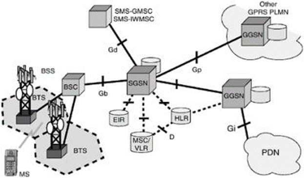
|
MTP | Message Transfer Part | The (MTP) is part of the Signaling System 7 (SS7) used for communication in Public Switched Telephone Networks. MTP is responsible for reliable, unduplicated and in-sequence transport of SS7 messages between communication partners.
MTP is formally defined primarily in ITU-T recommendations Q.701, Q.702, Q.703, Q.704 and Q.705. Tests for the MTP are specified in the ITU-T recommendations Q.781 for MTP2 and in Q.782 for MTP3. These tests are used to validate the correct implementation of the MTP protocol.
Functional levels
The SS7 stack can be separated into four functional levels: Level 1 through Level 3 comprise the MTP, and Level 4 the MTP user. MTP Level 3 is sometimes abbreviated MTP3; MTP Level 2, MTP2. MTP and SCCP are together referred to as the Network Service Part (NSP).
There is no one-to-one mapping of MTP Levels 1 through 3 onto the OSI model. Instead, MTP provides the functionality of layers 1, 2 and part of layer 3 in the OSI model. The part of layer 3 of the OSI model that MTP does not provide, is provided by SCCP or other Level 4 parts (MTP users).
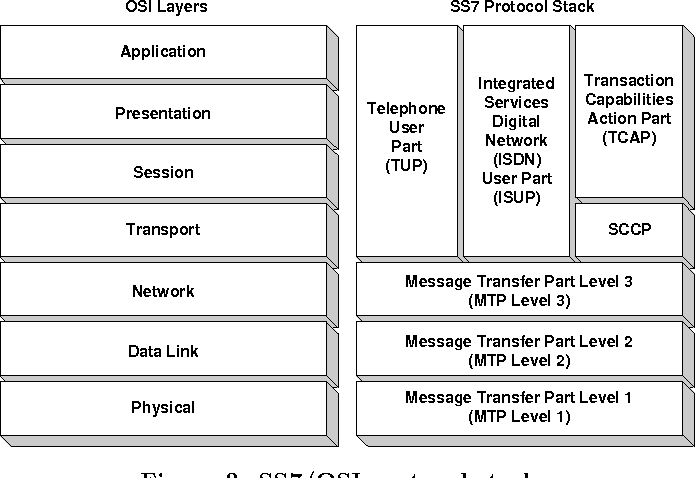
|
MTR | Mean Time to Repair | Mean time to repair (MTTR) is the average time required to troubleshoot and repair failed equipment and return it to normal operating conditions. It is a basic technical measure of the maintainability of equipment and repairable parts. |
MTU |
| In computer networking, the maximum transmission unit (MTU) is the size of the largest protocol data unit (PDU) that can be communicated in a single network layer transaction. The MTU relates to, but is not identical to the maximum frame size that can be transported on the data link layer, e.g. Ethernet frame.
Larger MTU is associated with reduced overhead. Smaller MTU values can reduce network delay. In many cases, MTU is dependent on underlying network capabilities and must be adjusted manually or automatically so as to not exceed these capabilities. MTU parameters may appear in association with a communications interface or standard. Some systems may decide MTU at connect time. |
Multicast |
| In computer networking, multicast is group communication where data transmission is addressed to a group of destination computers simultaneously. Multicast can be one-to-many or many-to-many distribution. Multicast should not be confused with physical layer point-to-multipoint communication.
Group communication may either be application layer multicast or network assisted multicast, where the latter makes it possible for the source to efficiently send to the group in a single transmission. Copies are automatically created in other network elements, such as routers, switches and cellular network base stations, but only to network segments that currently contain members of the group. Network assisted multicast may be implemented at the data link layer using one-to-many addressing and switching such as Ethernet multicast addressing, Asynchronous Transfer Mode (ATM), point-to-multipoint virtual circuits (P2MP)[3] or Infiniband multicast. Network assisted multicast may also be implemented at the Internet layer using IP multicast. In IP multicast the implementation of the multicast concept occurs at the IP routing level, where routers create optimal distribution paths for datagrams sent to a multicast destination address.
Multicast is often employed in Internet Protocol (IP) applications of streaming media, such as IPTV and multipoint videoconferencing.
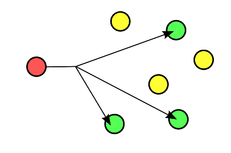
|
Multiplex |
| In telecommunications and computer networks, multiplexing (sometimes contracted to muxing) is a method by which multiple analog or digital signals are combined into one signal over a shared medium. The aim is to share a scarce resource. For example, in telecommunications, several telephone calls may be carried using one wire. Multiplexing originated in telegraphy in the 1870s, and is now widely applied in communications. In telephony, George Owen Squier is credited with the development of telephone carrier multiplexing in 1910.
The multiplexed signal is transmitted over a communication channel such as a cable. The multiplexing divides the capacity of the communication channel into several logical channels, one for each message signal or data stream to be transferred. A reverse process, known as demultiplexing, extracts the original channels on the receiver end.
A device that performs the multiplexing is called a multiplexer (MUX), and a device that performs the reverse process is called a demultiplexer (DEMUX or DMX). |
Mutex |
| In computer science, a lock or mutex (from mutual exclusion) is a synchronization mechanism for enforcing limits on access to a resource in an environment where there are many threads of execution. A lock is designed to enforce a mutual exclusion concurrency control policy. |
Mutual Exclusion |
| In computer science, mutual exclusion is a property of concurrency control, which is instituted for the purpose of preventing race conditions; it is the requirement that one thread of execution never enter its critical section at the same time that another concurrent thread of execution enters its own critical section.
The requirement of mutual exclusion was first identified and solved by Edsger W. Dijkstra in his seminal 1965 paper titled Solution of a problem in concurrent programming control,[1][2] which is credited as the first topic in the study of concurrent algorithms.
A simple example of why mutual exclusion is important in practice can be visualized using a singly linked list of four items, where the second and third are to be removed. The removal of a node that sits between 2 other nodes is performed by changing the next pointer of the previous node to point to the next node (in other words, if node i is being removed, then the next pointer of node i − 1 is changed to point to node i + 1, thereby removing from the linked list any reference to node i). When such a linked list is being shared between multiple threads of execution, two threads of execution may attempt to remove two different nodes simultaneously, one thread of execution changing the next pointer of node i − 1 to point to node i + 1, while another thread of execution changes the next pointer of node i to point to node i + 2. Although both removal operations complete successfully, the desired state of the linked list is not achieved: node i + 1 remains in the list, because the next pointer of node i − 1 points to node i + 1.
This problem (called a race condition) can be avoided by using the requirement of mutual exclusion to ensure that simultaneous updates to the same part of the list cannot occur.
The term mutual exclusion is also used in reference to the simultaneous writing of a memory address by one thread while the aforementioned memory address is being manipulated or read by another thread or other threads. |
MVNE | mobile virtual network enabler | A mobile virtual network enabler (MVNE) is a company that provides network infrastructure and related services, such as business support systems, administration and operations support systems to a Mobile Virtual Network Operator (MVNO). This enables MVNOs to offer services to their own customers with their own brands. The MVNE does not have a relationship with consumers, but rather is a provider of network enablement platforms and services. |
MVNO | Mobile Virtual Network Operator | A mobile virtual network operator (MVNO), virtual network operator (VNO), or mobile other licensed operator (MOLO), is a wireless communications services provider that does not own the wireless network infrastructure over which it provides services to its customers. An MVNO enters into a business agreement with a mobile network operator to obtain bulk access to network services at wholesale rates, then sets retail prices independently. An MVNO may use its own customer service, billing support systems, marketing, and sales personnel, or it could employ the services of a mobile virtual network enabler (MVNE). |
MVP | Minimum Viable Product | A Minimum Viable Product is, as Eric Ries said, the "version of a new product which allows a team to collect the maximum amount of validated learning about customers with the least effort." |
{kind=link}
{kind=link}
{kind=link}
{kind=link}
{kind=link}
{kind=link}
{kind=link}
{kind=link}
{kind=link}
{kind=link}
{kind=link}
{kind=link}
{kind=link}
{kind=link}
{kind=link}
{kind=link}
{kind=link}
{kind=link}
{kind=link}
{kind=link}
{kind=link}
{kind=link}